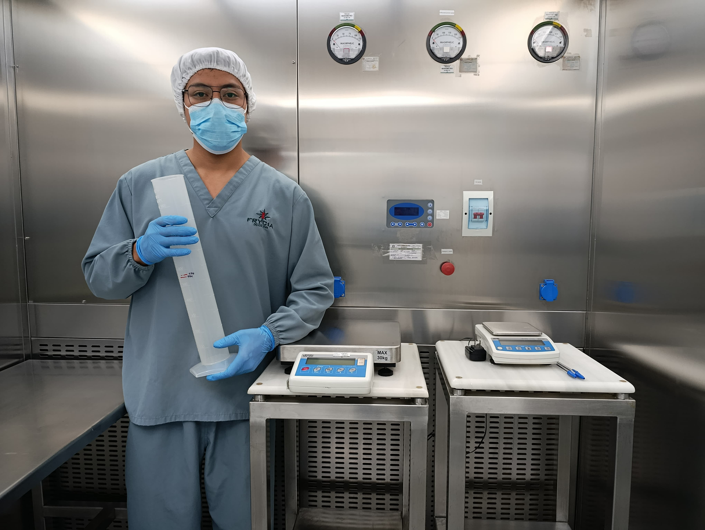

Un Cabello Puede Echarlo Todo a Perder
“Pasé 20 minutos vistiéndome para entrar a sala estéril. Al salir, entendí por qué: ahí adentro, la limpieza no es estética, es vida.”
La higiene en la industria farmacéutica es obsesiva por una razón: un solo error puede contaminar un lote entero. Aquí, lavarse las manos, limpiar una superficie o usar guantes no es rutina… es protección en su forma más pura.